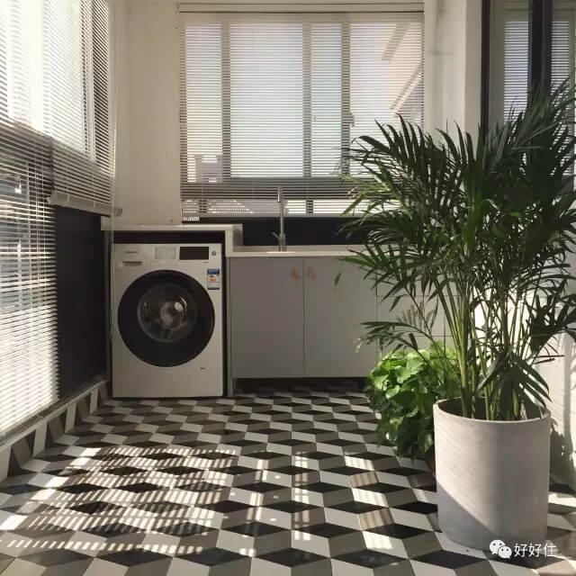
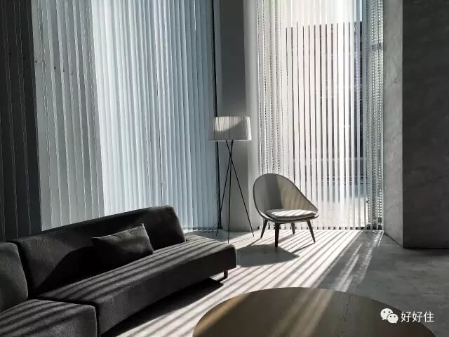
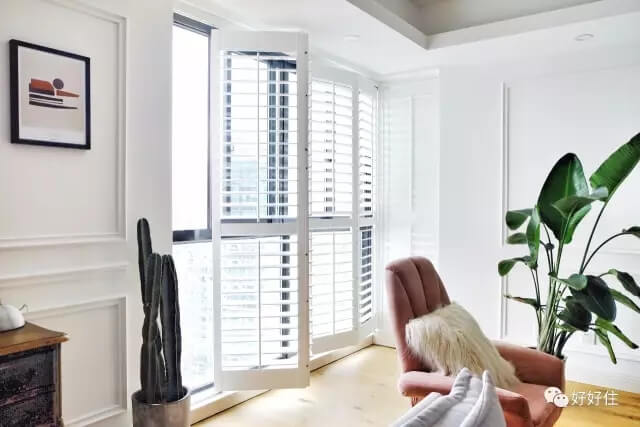

在家里使用百叶窗，一直是一件很有争议的事情。反对者常常觉得百叶窗不能保温，清洁难度也让他们抓狂，支持者却认为百叶窗对光影的控制，任何窗帘都无法取代。它不仅可以控制自然光进入室内的方向，变化多端的调节室内的明暗程度，还能使光影更规律而增强品质感。
况且百叶窗造型简洁，使用在家里，会有较强的装饰性。至于一直被诟病的清洁问题，其实用对了方法，也可以非常简单的解决。好好住APP里就有这样一大批百叶窗的拥护者，他们使用不同的百叶窗让光影成为家里最好的装饰。
NO.1 水平百叶窗
水平百叶窗可以通过转棒调节叶片的疏密，从而调节室内的光线；拉绳则可以调整百叶窗的升降。这种百叶窗一般使用实木材质，外观比较简洁，通常在室内窗框进行安装。
适用于：客厅，卧室
百叶窗前的花架。部分害虫的植物还在隔离驱虫，现在就等植物们渐渐茂盛起来了。
早晨的光。
逆光依然很美。
百叶窗清洁小Tips：
1，先戴上橡皮手套後外面再戴军用手套，接著将手浸入家庭用清洁剂的稀释溶液中，再把双手拧乾。
2，将手指插入全开的叶片中，夹紧手指用力滑动，这样一来，便能轻易清除叶片上的污垢了。
NO.2 折叠百叶窗
折叠百叶窗只需要拉动升降拉绳，就可把窗帘停留在任意高度。它有较好的采光效果，通常为铝制或PVC，防水且质地较轻。
适用于：洗手间，厨房，阳台
读书区利用百叶窗投射出的光线更加柔和。
百叶窗的正确打开方式。
只差一把懒人椅的阳台。
菜切到一半，阳光洒进来。
如何正确的挑选折叠百叶窗？
观察叶片是否平滑，用手下压叶片，等叶片弯曲之后松手，看看叶片是不是会迅速恢复，不会出现一直弯曲的现象。
之后再看当叶片闭合之后，是不是能严密地遮住光线，在半开或者半闭的时候调节杆是不是会松动从而让叶片下滑或者角度出现变化。
NO.3 卷帘百叶窗
卷帘根据不同的质地特性达到不同居室对光线的需要，由草或竹子加工的天然草苇编织成半透明的百叶窗，这种百叶窗可以从底部卷到顶部，遮光性较强。
适用于：书房，卧室
水泥花砖玄关。阳台的休闲区，地面是水泥地，这是装修时第一个定下来的想法~
午后的入户花园。
NO.4 竖直百叶窗
竖直百叶窗的材质一般为聚酯塑料，铝，木片等非编织物，其宽度大约在3到4英寸，可以完全收到一边，家里有大落地窗的屋主可以考虑使用这种百叶窗哦。
适用于：客厅
光影斑驳的阳台。
光线。
NO.5 推拉百叶窗
推拉式的百叶窗则更有复古感，同样是通过转棒调节叶面的缝隙大小，但推拉式百叶窗的叶面是全部固定在窗框上的，通过推动窗框来控制室内的光线。这种框内百叶也被应用在室内柜门上，用来通风。
客厅的折叠推拉木百叶是当时装修时我的坚持，因为客厅的落地窗有半面墙，如果做窗帘的话会浪费掉另外半面墙的完整性，所以当时不顾老公对的反对做了木百叶。事实证明决定是正确的，太阳大的时候只要拉上百叶，可以自动调节光线。
入户的白色柜子，左边有热水器和燃气表，百叶窗通风。右边是储物柜。下面是鞋柜。
阳光透过朝向西方的百叶窗，可以铺满整张床。